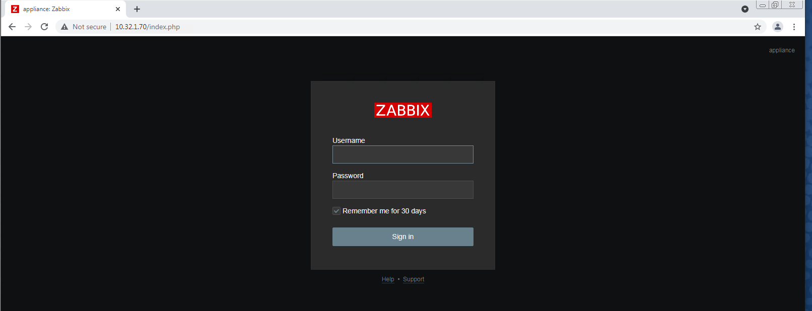
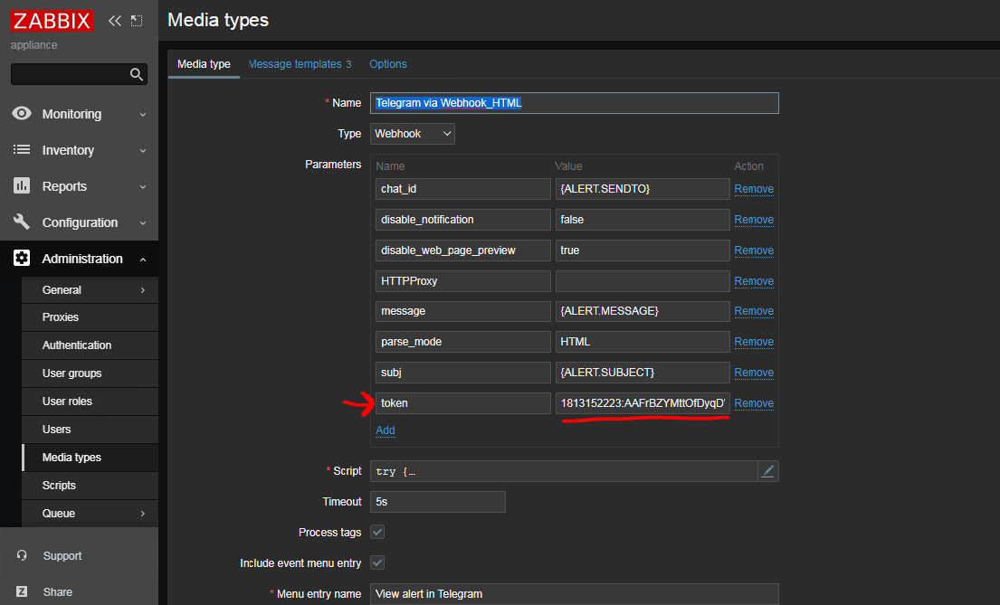

ZABBIX
Introducción
El presente detalla la instalación y configuración del Appliance de Zabbix (v.5.4) para el monitoreo de red implementado por el equipo de Internet y Monitoreo para el proyecto final de la materia “Aplicaciones de redes de computadoras”. Zabbix es un sistema para monitorear la capacidad, el rendimiento y la disponibilidad de los servidores, equipos, aplicaciones y bases de datos. Además, Zabbix también ofrece características avanzadas de monitoreo, alertas y visualización, que incluso, algunas de las mejores aplicaciones comerciales de este tipo no ofrecen. El monitoreo se llevo a cabo por medio de agentes de Zabbix (Zabbix agent) y el servicio de SNMP (Simple Network Management Protocol). Con Zabbix se esta monitoreando la red derecha (VLAN 201) para todo servidor Debian o de pfSense.
Lo que se busco monitorear por medio de Zabbix fue lo siguiente:
- Uptime
- Uso de CPU
- Memoria disponible
- Espacio en disco disponible
- Trafico de cada adaptador de red (Ancho de banda)
También se lleva a cabo un monitoreo de los siguientes servicios (si es aplicable para dicho host):
- HTTP
- SSH
- HTTPS
- DNS
- freeRadius
- SMTP
- POP3
- IMAP
Para el monitoreo de estos servicios y obtención de dichos datos, Zabbix cuenta con los llamados “Templates”, los cuales por medio del agente o el servicio de SNMP facilita la obtención y monitoreo del status de estos mismos. Estos templetes son una colección de ITEMS, TRIGGERS, GRAPHS entre otras cosas, diseñadas especialmente para ciertos dispositivos; para el caso de este proyecto, los templetes que se utilizaron fueron los siguientes:
- Linux by Zabbix Agent (Monitoreo de Servidores Debian en máquinas del laboratorio)
- App RADIUS Service (Monitoreo de Servicio freeRadius)
- Linux SNMP (Monitoreo de Servidor de DO y pfSense)
- App Axigen-Services (Monitoreo de Axigen (Para servicios POP3, IMAP, SMTP))
Configuración de Zabbix Appliance
Como el primer paso para poder configurar el Appliance de Zabbix, es descargar esta misma de los repositorios de Zabbix, e instalarla en la plataforma de virtualización virtual box.
Una vez descarga, si importa el appliance a VirtualBox. Y re realizan las modificaciones de red necesarias. En este caso se establece la red estática predefinida en el documento del proyecto final, modificando el siguiente archivo de configuración y asignando los parámetros de “IPADDR”, “NETMASK”, “GATEWAY” y “DNS1” correspondientes, como se puede ver a continuación
Una vez hechos estos cambios, se deben reiniciar los servicios de red para que los cambios se vean reflejados. Para confirmar que los cambios hallan surgido efecto, se corre el comando ip addr y se verifica que la IP que se configuro, se muestre en el adaptador de red indicado.
Ya con este cambio realizado, la interfaz web de Zabbix puede ser accessada por medio de esta IP introdujendola en el navegador de la siguiente manera: http://10.32.1.70
Las credenciales de acceso del WEB UI: User: Admin Password: zabbix
Las credenciales de acceso del CLI: User: root Password: Zabbix
Una vez realizado esto, el appliance ya quedo configurado. Lo siguiente es la instalación de agentes oservicio SNMP para el monitoreo de los hosts que se deseen monitorear
Instalacion Zabbix Agent en Debian 10
Para la instalación de agentes de Zabbix en los servidores de Debian 10 de las maquinas virtuales de las computadoras del laboratorio se utilizó la siguiente guía como referencia (se requirió hacer algunos ajustes):
https://computingforgeeks.com/how-to-install-zabbix-agent-on-debian-linux/
Paso #1: Añadir repositorio de Zabbix
Para añadir el repositorio de donde se instalara el agente, se corre el siguiente comando (como super user / root user):
wget https://repo.zabbix.com/zabbix/5.4/debian/pool/main/z/zabbix-release/ zabbix-release_5.4-1+debian10_all.debdpkg -i zabbix-release_5.4-1+debian10_all.deb
Paso #2: Instalación de Agente de Zabbix
El servidor de Zabbix utiliza a los agentes o el servicio de SNMP para monitorear sus clientes.
Para instalar el agente en Debian Linux se ejecutan los siguientes comandos.apt update
apt install Zabbix-agent
Se inicia y habilita el agente:systemctl enable zabbix-agentPaso #3: Configurar Agente de Zabbix
systemctl start zabbix-agent
Se abre el archivo de configuración del agente y se modifian por lo menos la siguientes líneas (se pone la dirección de tu servidor de Zabbix y se le da un nombre a este host)
Paso #4: Permitir puertos de listening en el firewall
Se abren los puertos 10050 y 10051 en el firewall de preferencia
Configuración de Hosts en el servidor de Zabbix
1.Se accede a la interfaz de web de tu servidor de Zabbix.
2.Bajo la pestaña de configuración del lado derecho, se selecciona “Hosts”.
3.En la parte superior derecha se selecciona “Create Host”
4.Se introduce la información correspondiente. Importante que el “Host Name” sea el mismoque se puso en el archivo de configuración.
5.Una vez finalizada la configuración, se le da en el botón de “Add”. Y se verán todos loshosts dados de alta en el servidor de Zabbix.
Al estar el “status” en verde, significa que el agente/servicio SNMP esta funcionando correctamente.
Templetes a los Hosts
Para añadir un templete de los ítems que se van a monitorear a uno de los hosts, se selecciona el host, y se va a la pestaña de “Templates”.
Una vez en la pantalla de “Templates” se busca y selecciona el templete correspondiente. En el caso de los servidores de Debian, el templete a utilizar fue “Linux by Zabbix Agent”.
Se actualiza, y listo, el host ya se encuentra conectado y tiene la lista de ITEMS que van a ser monitoreados.
Notificación de Generación de Alarma por medio de Telegram
Configuración en Telegram
1.Crear un bot en Telegram por medio de @botfather
2.Inicializar el bot creado, para poder habilitar el poder recibir mensaje.
3.Crear el Grupo a donde se recibirán las alertas (El grupo tiene que ser público, y tener alBot creado como administrador). Y inicializar al bot en este chat.
4.Obtener el Group ID, a donde se enviaran los mensajes (Este será utilizado en el Servidorde Zabbix cuando se configure el servicio de Telegram).
Configuración en Zabbix
1.Descargar el siguiente archivo, e importarlo a Zabbix (Administration >Media Types >Import).
https://wee3bsvqod3svu3xhsudavsoem-ac4c6men2g7xr2a-blog-programs74-ru.translate.goog/how-to-send-message-from-zabbix-to-telegram-via-webhook/#
2.Una vez importado, proceder a editar el “Media Type” recién importado, oara cambiar elparámetro de “Token” y asignar el token obtenido en la parte de configuración en Telegram.
3.Añadir los “Message Templates” necesarios, y guardar los cambios.
4.Realizar una prueba de tu “Media Type” para verificar funcionamiento.
5.Finalmente se requiere configurar el método de notificación para el usuario. Ir aAdministration >> Users >> **Seleccionar Usuario que recibirá estas notificaciones** >>Media >> Add
6.Listo, ahora ya quedo configurada la notificación de Alarmas por medio de Telegram, paralas alertas configuradas en el servidor de Zabbix.
Configuración de Notificaciones por Correo Electrónico
1.Al igual que la configuración de Telegram, se va a Administration >> Media Types >>Email
2.Se editan los parámetros, agregando tu servidor SMTP, el puerto, el correo electrónico dedonde se enviaran las notificaciones/alarmas, y el método de autenticación (en nuestrocaso, usuario y contraseña).
3.Se guardan los cambios, y se puede realizar una prueba de funcionalidad.
4.Finalmente, al igual que con Telegram, se tiene que añadir este servicio de correo alusuario(s) que recibirá estas alarmas.
Administration >> Users >> **Seleccionar Usuario que recibirá estas notificaciones** >>Media >> Add
5.De esta manera quedan configuradas las alarmas por medio de correo electrónico.
Visualizar Status/Servicios de los Host
Ir a la pestaña de Monitoring >> Hosts y seleccionar el host del que se quieren ver el status. Se presentaran varias opciones de visualización:
1.Latest Data – Se visualizaran los datos RAW de todos los ITEMS que se esténmonitoreando de dichos hosts.
2.Problems – Se mostraran las alertas que tengan que ver con el hosts (desconexión, servicioscaídos, alto uso de memoria, poco espacio en disco, etc).
3.Graphs – Manera grafica de representar ciertas estadísticas de los hosts (Memoria, Uso deCPU, Ancho de Banda, etc).
Ejemplo de “Latest Data” en host Debian
Ejemplo “Problems” en hosts
Ejemplo “Problems” en hosts